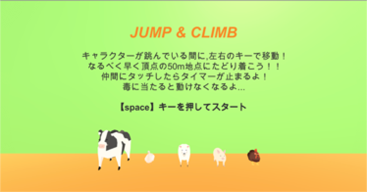
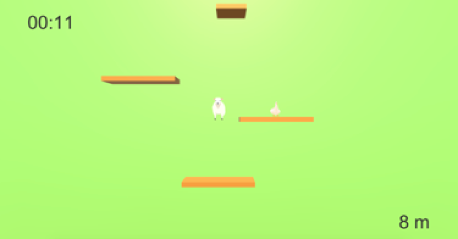

Works
外見に対する不安を解消
I'm fine




制作背景
OthloHack2019に参加し制作しました。今年のテーマは“○○を身近に”でした。運営側が決めた５人チームでの制作でした。アイデア出しの際に、おしゃれが面倒くさいという日常の不満が出ました。“おしゃれに決めすぎたくはないけど、だらしなくもいたくない”という外見に対する不安から、おしゃれは最低限しなければならないが面倒に思えてしまうのが不満の根源にあるとグループでまとまりました。よってテーマは“イメージアップを身近に”。このような感情を持つ人たちは、自分が浮いていないかどうかが気になるということで、同じようなアイテムを着ている人たちの着こなしをファッション用語を使うことなく、写真を撮って検索できるアプリを制作しました。自分の着こなしのどこにプラス要素を持ってきたらだらしなく見えないのかを客観的に見ることができるため、同じアイテムを使っていても、よりおしゃれに見せる方法を探すことができます。2日半での制作だったので、改良すべき点は多く、とくにUXの部分に問題が多々あると思われますが、時間目一杯まで形になるように作業した点はとても自分の力となりました。
バックエンド班がサーバー構築からAIを用いた画像検索の部分を担当し、私はアプリデザインとフロントエンド部分のコーディングを担当しました。